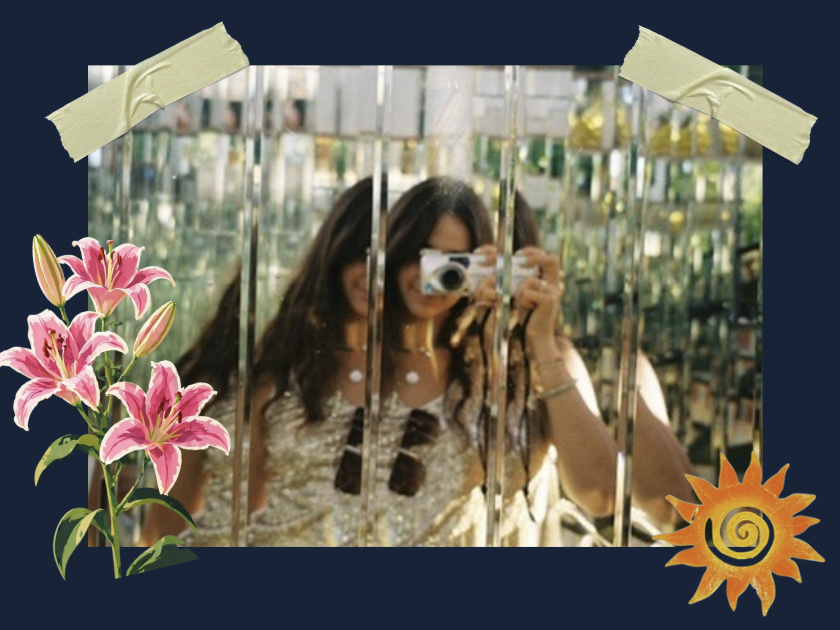

Hi! I'm Maria
Since I was 14, I've found joy in taking pictures of everything. It puts me into a flow state by helping me to slow down, observe details, and appreciate the little things.
Growing past my iPad kid phase, I realized I could direct my eyes into different lenses and convert my screen time to something more productive: shaping how I see the world. I started with iPhone photography during my travels, becoming obsessed with capturing and reflecting on different ways of life, spotting cool patterns in architecture, and learning to be fully present with myself and surroundings.
I also tend to romanticize every little thing. I love to capture beauty in the details — in the chaos and in the mundane. I love nature and picturing nature, and am hoping to be promoted from the "photographer friend" to the "digi friend" as I build my ability to capture individuals. I currently own 6 cameras of different types, mainly shooting with my Leica D-Lux 7. I hope to do freelance photography on the side in the future. :)
Contact